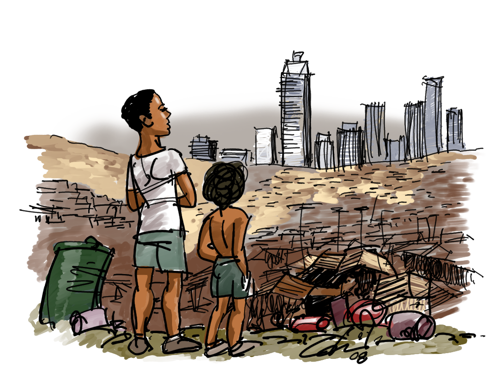

O trabalho decente deve ser entendido como a atividade humana que cumpre com as formalidades legais para seu exercício, respeitados os direitos e princípios constitucionalmente garantidos e internacionalmente adotados em documentos da OIT — Organização Internacional do Trabalho.

Importância dos Objetivos de Desenvolvimento Sustentável
Os 193 países que fazem parte da ONU têm guiado suas escolhas pela Agenda 2030: os Objetivos de Desenvolvimento Sustentável (ODS).
Apresentada em setembro de 2015 na Cúpula de Desenvolvimento Sustentável da Assembleia Geral da ONU, a agenda contém 17 metas — entre elas eliminar a pobreza, combater a fome e garantir educação para todos até 2030.
A importância do trabalho para a sociedade e a economia
Na sociedade, o trabalho é essencial para o desenvolvimento econômico e o crescimento sustentável. Gera renda e riqueza, promove a distribuição de recursos e o aumento do bem-estar social. Além disso, é responsável pela inovação e pelo avanço tecnológico, impulsionando a competitividade e a produtividade.
No longo prazo, a desigualdade de renda e de oportunidades prejudica o crescimento econômico. Os mais vulneráveis têm menores expectativas de vida e dificuldades de se libertarem de um círculo vicioso de insucesso escolar, baixas qualificações e poucas perspectivas de empregos de qualidade.
O que é desigualdade econômica?
A desigualdade econômica pode ser entendida como a distribuição desigual de renda em determinada área, sendo influenciada por fatores históricos, culturais, sociais e pela falta de investimento em políticas públicas.